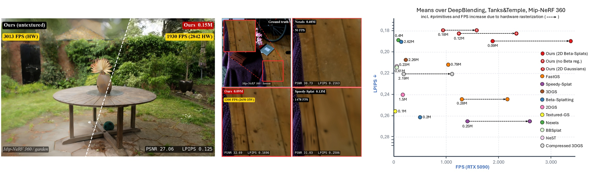
(fixed-function Vulkan, RTX 5090)
at over 10× fewer primitives
— real-time on a phone
Abstract
Recent extensions of 3D Gaussian Splatting capture fine color detail using hash-grid based appearance parameterization, but pay a high per-fragment cost from neural field queries during rendering. We introduce a decoupled radiance representation that models low-frequency geometry and view-dependent appearance with 2D surfels, while representing high-frequency texture as a view-independent residual. Because the residual is view independent, we bake it into a compact texture, so inference reduces to pure hardware texture sampling with no neural queries. Combined with sparsity-enhancing optimization, our method renders significantly faster and sparser than prior work while preserving perceptual fidelity, reaching real-time 4K rates on consumer hardware and real-time rendering on mobile devices.
Key Ideas
- View-independent texture residual. Restricting the residual to be view independent is what makes it bakeable, removing per-fragment neural queries at inference.
- Hardware-native rendering. Inference is nothing but GPU texture lookups. Storing the residual as block-compressed BC7 means the texture unit decompresses and filters it in fixed-function hardware, at the same per-fragment cost as an uncompressed fetch but a fraction of the bandwidth — and the same path runs on mobile GPUs, which ship the equivalent hardware (BC7 on desktop and iOS, ASTC on Android). The rasterization itself is hardware too: a Vulkan port using the GPU's fixed-function rasterizer and ROP blending draws the same bakes 1.7× faster than our CUDA renderer at measured parity.
- Sparse geometry. Decoupling appearance from geometry lets the surfels stay sparse instead of splitting to fit texture, lowering primitive count. Flattened beta-surfels sharpen the opacity falloff to a compact support, so each surfel covers fewer fragments and far fewer of them survive the alpha cutoff — cutting overdraw, the dominant per-pixel cost once primitive count is low.
Method
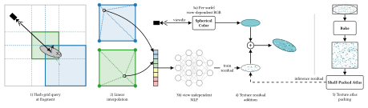
Interactive Demo
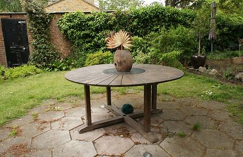
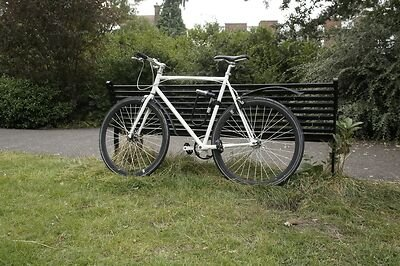
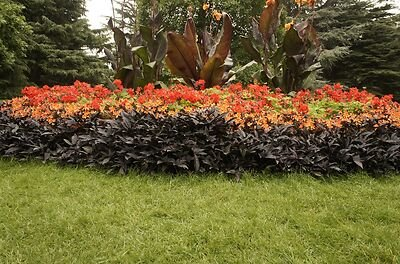
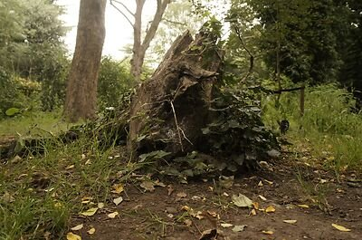
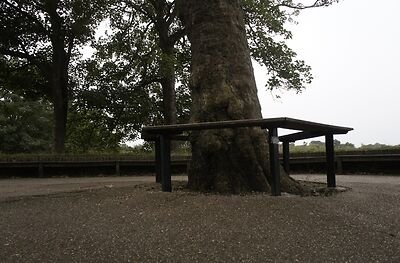
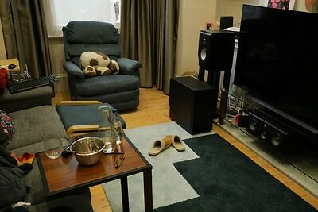
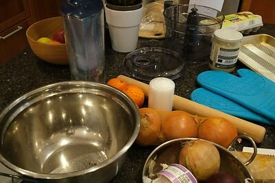
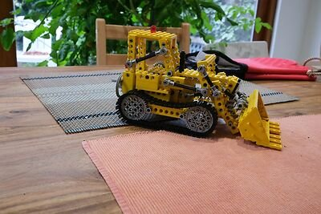
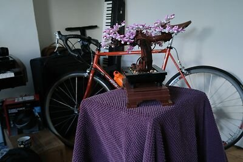
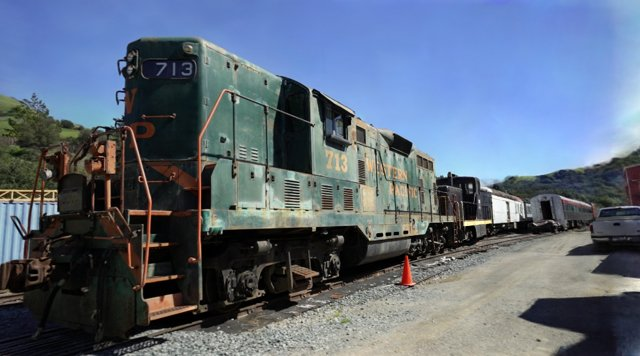
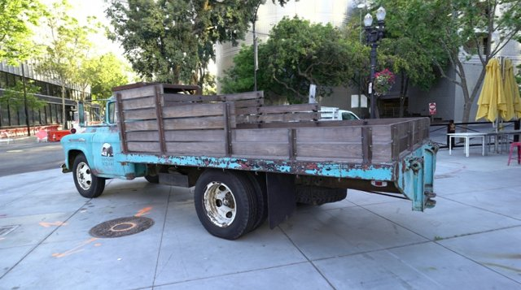
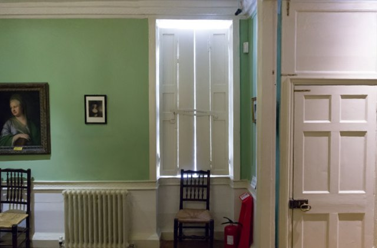
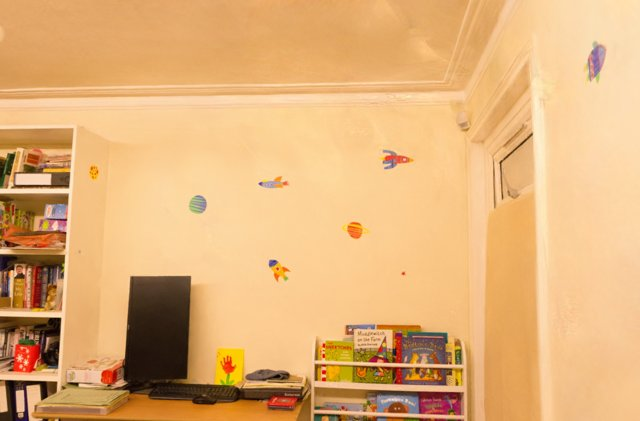
Side-by-side with FastGS and Nexels
The same camera orbit rendered by all three methods. Drag the two white handles to move the split. Pause and press Crop, then drag a box over the frame to zoom into it; the split still works inside the zoom. Press play to zoom back out and carry on.
Results
Rendering throughput and quality on three standard benchmarks, measured on a single
RTX 5090. All timings use per-frame cuda.Event pairs (50 warmup + 400 timed
frames, sort and preprocess included), cycling through each scene's full held-out test set so
all methods are timed on identical images. We first highlight the two most relevant
baselines: FastGS, the fastest untextured method, which optimises the
per-primitive cost of a conventional splat, and Nexels (100K), the
strongest textured baseline near our primitive budget. We instead change what a primitive
stores — moving high-frequency appearance into a baked texture, so far fewer and
cheaper primitives are needed. The full comparison follows below.
| Benchmark | Method | Primitives | FPS ↑ | Our speed-up ↑ | PSNR ↑ | SSIM ↑ | LPIPS ↓ |
|---|---|---|---|---|---|---|---|
| Mip-NeRF 360 9 scenes | FastGS | 394,189 | 1209 | 1.27× | 27.44 | 0.7967 | 0.2589 |
| Nexels (100K) | 99,934 | 100 | 15.4× | 26.55 | 0.7764 | 0.2245 | |
| Ours | 123,051 | 1538 | — | 27.23 | 0.7892 | 0.2114 | |
| + HW rasterizer | 2621 | — | |||||
| Tanks & Temples 2 scenes | FastGS | 242,133 | 1243 | 1.78× | 24.00 | 0.8404 | 0.2093 |
| Nexels (100K) | 99,932 | 181 | 12.3× | 22.92 | 0.8244 | 0.1752 | |
| Ours | 86,746 | 2217 | — | 24.10 | 0.8507 | 0.1447 | |
| + HW rasterizer | 2998 | — | |||||
| Deep Blending 2 scenes | FastGS | 216,748 | 1451 | 1.39× | 30.02 | 0.9045 | 0.2651 |
| Nexels (100K) | 99,843 | 86 | 23.4× | 30.00 | 0.9075 | 0.2097 | |
| Ours | 66,622 | 2014 | — | 29.87 | 0.8902 | 0.2176 | |
| + HW rasterizer | 4347 | — |
Full comparison: one GPU, one eval script
Every baseline below is retrained and re-benchmarked by us on the same RTX 5090, with quality recomputed from the saved renders by one shared evaluation script — no numbers are copied from other papers. We are the fastest method on all three benchmarks; among methods above 1000 FPS we have the best LPIPS on every benchmark mean and on 12 of 13 scenes. Red, orange and yellow tints mark the best, second and third value in each quality and speed column (Primitives and Size are context, not ranked; see the note below).
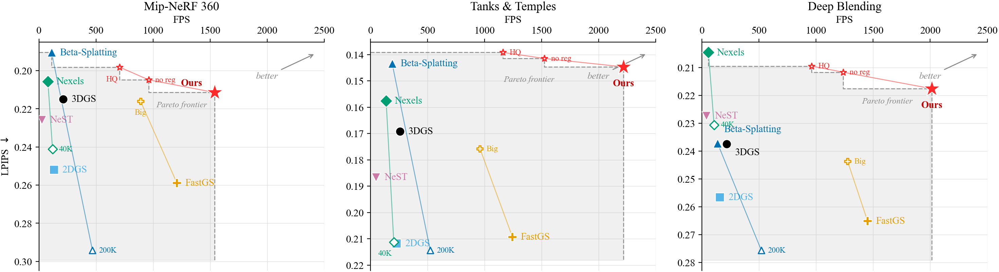
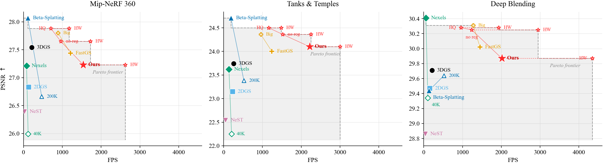
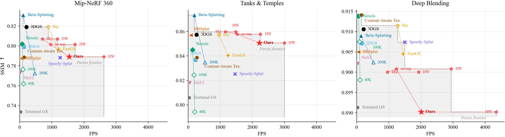
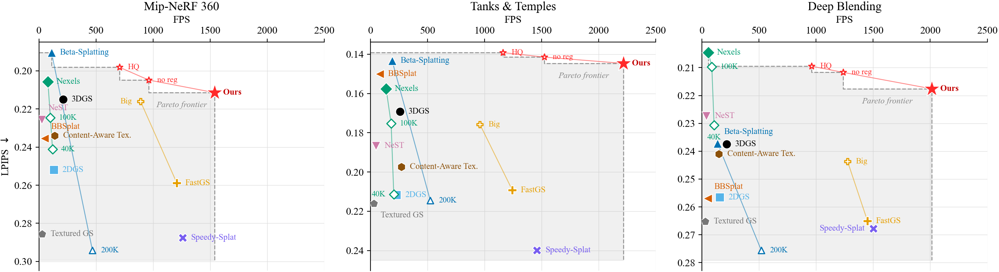
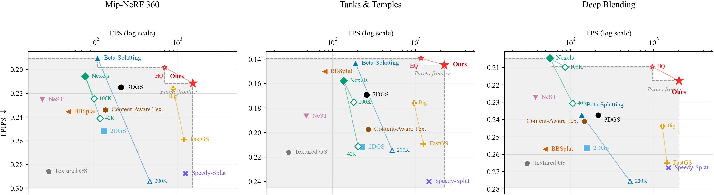
Mip-NeRF 360 (9 scenes)
| Method | PSNR ↑ | SSIM ↑ | LPIPS ↓ | Prims | Size (MB) | FPS ↑ |
|---|---|---|---|---|---|---|
| 3DGS | 27.54 | 0.8190 | 0.2149 | 2,732,349 | 646 | 211 |
| 2DGS | 26.83 | 0.7989 | 0.2520 | 2,128,093 | 495 | 131 |
| Beta-Splatting | 28.07 | 0.8311 | 0.1904 | 3,111,111 | 356 | 110 |
| Beta-Splatting (200K) | 26.66 | 0.7725 | 0.2942 | 205,331 | 23 | 469 |
| BBSplat | 26.80 | 0.7874 | 0.2355 | 237,778 | 176 | 48 |
| Nexels (40K) | 25.99 | 0.7619 | 0.2411 | 39,977 | 138 | 119 |
| Nexels (100K) | 26.55 | 0.7764 | 0.2245 | 99,934 | 282 | 100 |
| Nexels (400K) | 27.21 | 0.8018 | 0.2057 | 399,771 | 230 | 78 |
| Speedy-Splat | 26.91 | 0.7883 | 0.2875 | 315,961 | 75 | 1259 |
| FastGS | 27.44 | 0.7967 | 0.2589 | 394,189 | 98 | 1209 |
| FastGS (Big) | 27.80 | 0.8191 | 0.2160 | 1,161,438 | — | 890 |
| Content-Aware Texturing | 26.84 | 0.7886 | 0.2340 | 155,756 | 436 | 137 |
| Textured Gaussians | 25.86 | 0.7336 | 0.2857 | 100,000 | 3,837 | 28 |
| NeST | 26.39 | 0.7734 | 0.2257 | 961,163 | 224 | 24 |
| Ours (HQ) | 27.88 | 0.8070 | 0.1981 | 248,341 | 839 | 706 |
| Ours (no reg) | 27.65 | 0.8015 | 0.2048 | 168,017 | 596 | 962 |
| Ours | 27.23 | 0.7892 | 0.2114 | 123,051 | 445 | 1538 |
| + HW rasterizer | 2621 |
Tanks & Temples (2 scenes)
| Method | PSNR ↑ | SSIM ↑ | LPIPS ↓ | Prims | Size (MB) | FPS ↑ |
|---|---|---|---|---|---|---|
| 3DGS | 23.74 | 0.8574 | 0.1692 | 1,574,592 | 372 | 259 |
| 2DGS | 23.15 | 0.8367 | 0.2118 | 851,362 | 198 | 230 |
| Beta-Splatting | 24.71 | 0.8735 | 0.1434 | 1,750,000 | 200 | 190 |
| Beta-Splatting (200K) | 23.38 | 0.8348 | 0.2144 | 200,000 | 23 | 524 |
| BBSplat | 23.70 | 0.8570 | 0.1501 | 300,000 | 226 | 80 |
| Nexels (40K) | 22.25 | 0.7942 | 0.2113 | 39,979 | 138 | 204 |
| Nexels (100K) | 22.92 | 0.8244 | 0.1752 | 99,932 | 282 | 181 |
| Nexels (400K) | 23.62 | 0.8449 | 0.1576 | 399,767 | 230 | 137 |
| Speedy-Splat | 23.44 | 0.8252 | 0.2399 | 181,817 | 43 | 1459 |
| FastGS | 24.00 | 0.8404 | 0.2093 | 242,133 | 60 | 1243 |
| FastGS (Big) | 24.36 | 0.8572 | 0.1758 | 543,997 | — | 959 |
| Content-Aware Texturing | 23.37 | 0.8387 | 0.1973 | 133,880 | 127 | 270 |
| Textured Gaussians | 22.70 | 0.8058 | 0.2161 | 100,000 | 3,837 | 30 |
| NeST | 22.54 | 0.8178 | 0.1866 | 378,448 | 90 | 48 |
| Ours (HQ) | 24.50 | 0.8598 | 0.1392 | 149,681 | 539 | 1161 |
| Ours (no reg) | 24.36 | 0.8578 | 0.1415 | 107,428 | 397 | 1524 |
| Ours | 24.10 | 0.8507 | 0.1447 | 86,746 | 325 | 2217 |
| + HW rasterizer | 2998 |
Deep Blending (2 scenes)
| Method | PSNR ↑ | SSIM ↑ | LPIPS ↓ | Prims | Size (MB) | FPS ↑ |
|---|---|---|---|---|---|---|
| 3DGS | 29.71 | 0.9106 | 0.2375 | 2,471,124 | 584 | 216 |
| 2DGS | 29.47 | 0.9071 | 0.2566 | 1,508,720 | 351 | 157 |
| Beta-Splatting | 29.44 | 0.9090 | 0.2372 | 3,000,000 | 343 | 136 |
| Beta-Splatting (200K) | 29.64 | 0.9024 | 0.2756 | 200,000 | 23 | 520 |
| BBSplat | 29.34 | 0.9050 | 0.2570 | 160,000 | 111 | 49 |
| Nexels (40K) | 29.34 | 0.8981 | 0.2306 | 39,958 | 138 | 106 |
| Nexels (100K) | 30.00 | 0.9075 | 0.2097 | 99,843 | 282 | 86 |
| Nexels (400K) | 30.41 | 0.9138 | 0.2046 | 399,188 | 230 | 56 |
| Speedy-Splat | 29.62 | 0.9074 | 0.2678 | 250,990 | 59 | 1501 |
| FastGS | 30.02 | 0.9045 | 0.2651 | 216,748 | 54 | 1451 |
| FastGS (Big) | 30.31 | 0.9115 | 0.2437 | 649,603 | — | 1276 |
| Content-Aware Texturing | 29.99 | 0.9141 | 0.2410 | 185,094 | 252 | 147 |
| Textured Gaussians | 29.04 | 0.8913 | 0.2652 | 100,000 | 3,837 | 30 |
| NeST | 28.86 | 0.9021 | 0.2273 | 478,000 | 113 | 38 |
| Ours (HQ) | 30.28 | 0.9000 | 0.2095 | 133,095 | 498 | 961 |
| Ours (no reg) | 30.25 | 0.9008 | 0.2117 | 93,813 | 366 | 1237 |
| Ours | 29.87 | 0.8902 | 0.2176 | 66,622 | 259 | 2014 |
| + HW rasterizer | 4347 |
Size is the payload as each method stores it, so the column mixes compressed and
uncompressed formats: our atlas ships BC7-compressed, while Content-Aware Texturing and
Textured Gaussians store fp32 textures with no compressed variant in their pipelines.
Beta-Splatting (200K) and Nexels (40K/100K) are those papers' own reduced primitive budgets,
closest to our primitive count. NeST is run as its released baseline method.
FastGS (Big) is FastGS's own train_big.sh recipe, its
higher-quality/slower configuration; size is unrecorded because those checkpoints were not
packaged for deployment.
Ours (no reg) and Ours (HQ) ablate our two speed-critical design choices,
each retrained, baked and finetuned identically. They form a ladder rather than independent
knobs: the falloff regulariser acts on the Beta shape parameter, so the Gaussian variant (HQ)
is necessarily unregularised. Adopting the compact Beta kernel is worth
1.3–1.4× the frame rate, switching the regulariser on a further
1.5–1.6×, and together 1.9–2.2×, for a combined
0.4–0.7 dB of PSNR. Both steps shrink the model (248K primitives, then 168K, then
123K on Mip-NeRF 360), and neither alternative keeps the throughput lead: at 962 and
706 FPS they fall below FastGS and FastGS (Big).
+ HW rasterizer rows draw the identical production bake with the GPU's fixed-function rasterizer and ROP blending (a Vulkan port of our renderer; Vulkan GPU timestamps, same 400-frame protocol). Quality parity is measured (≤0.001 LPIPS across all 13 scenes), so only speed changes. The same port helps dense baselines far less — 1.28× for both 3DGS and FastGS on garden, whose frames are dominated by sorting millions of primitives — while our ~100K-primitive scenes gain 1.7×: sparsity and compact kernels are what the hardware path rewards. On this path texturing costs only 3.9–8.6% of the frame, and our no-reg and HQ variants reach 1723–2945 and 1172–1932 FPS (dashed links in the figure).
Mip-NeRF 360
| Scene | Resolution | PSNR ↑ | SSIM ↑ | LPIPS ↓ | Prims | Size (MB) | FPS ↑ | FPS (HW) ↑ |
|---|---|---|---|---|---|---|---|---|
| bicycle | 1237×822 | 24.41 | 0.7132 | 0.2383 | 160,097 | 620 | 1520 | 2860 |
| bonsai | 1559×1039 | 32.53 | 0.9364 | 0.1669 | 92,281 | 286 | 1330 | 2595 |
| counter | 1558×1038 | 29.29 | 0.8994 | 0.1819 | 68,394 | 208 | 1594 | 2232 |
| flowers | 1256×828 | 20.78 | 0.5581 | 0.3202 | 184,511 | 728 | 1301 | 2262 |
| garden | 1297×840 | 27.02 | 0.8373 | 0.1288 | 148,658 | 576 | 1954 | 2761 |
| kitchen | 1558×1039 | 31.39 | 0.9181 | 0.1224 | 119,462 | 253 | 1384 | 1721 |
| room | 1557×1038 | 31.48 | 0.9164 | 0.1866 | 62,947 | 228 | 2007 | 3393 |
| stump | 1245×825 | 25.66 | 0.7225 | 0.2632 | 96,365 | 378 | 1433 | 3277 |
| treehill | 1267×832 | 22.55 | 0.6015 | 0.2939 | 174,744 | 727 | 1320 | 2486 |
Tanks & Temples
| Scene | Resolution | PSNR ↑ | SSIM ↑ | LPIPS ↓ | Prims | Size (MB) | FPS ↑ | FPS (HW) ↑ |
|---|---|---|---|---|---|---|---|---|
| truck | 979×546 | 25.61 | 0.8781 | 0.1169 | 85,413 | 326 | 2399 | 3249 |
| train | 980×545 | 22.59 | 0.8233 | 0.1724 | 88,080 | 324 | 2035 | 2747 |
Deep Blending
| Scene | Resolution | PSNR ↑ | SSIM ↑ | LPIPS ↓ | Prims | Size (MB) | FPS ↑ | FPS (HW) ↑ |
|---|---|---|---|---|---|---|---|---|
| playroom | 1264×832 | 30.24 | 0.8907 | 0.2051 | 67,156 | 270 | 1853 | 4380 |
| drjohnson | 1332×876 | 29.50 | 0.8898 | 0.2302 | 66,087 | 247 | 2175 | 4314 |
Our method carries ~3× fewer primitives than FastGS on every benchmark (over 10× fewer than 3DGS) and is 7–9× faster than 3DGS on the benchmark means, up to 13× on garden. FastGS holds a small PSNR edge on Mip-NeRF 360 (−0.21 dB) and Deep Blending (−0.15 dB) and we lead on Tanks & Temples (+0.10 dB), while LPIPS favours us on all 13 scenes — the explicit texture holds high-frequency detail that a per-primitive colour model cannot. Nexels (400K), the strongest textured baseline, edges our LPIPS on Mip-NeRF 360 and Deep Blending but renders 16–36× slower and trails us on Tanks & Temples. FastGS's own high-quality recipe, FastGS (Big), closes much of the LPIPS gap and still trails us on every benchmark mean, at 1.6–2.3× our primitive count and 0.6–0.8× our frame rate.
Texture finetune. The baked atlas is initialised from the trained neural residual and then finetuned against the training images for a short schedule, with geometry and view-dependent colour frozen so only the texels move. Baking alone can only lose information relative to its teacher; optimising the texels directly recovers it and then exceeds it, worth +0.49 dB and −0.037 LPIPS on average over the raw bake at identical primitive count, storage and frame rate.
Protocol. FastGS checkpoints were trained with its own released script
(train_base.sh), which loads images at the 3DGS default (long edge capped at
1600 px). On Mip-NeRF 360 we render them at the standard evaluation resolution
(images_4 outdoors, images_2 indoors) so both methods are measured on
identical images; retraining FastGS at that resolution changes its primitive count by
−8 % and its throughput by <3 %. On Tanks & Temples and Deep
Blending both methods already use the same native resolution. FastGS runs at its own released
default (mult = 0.5); at mult = 1.0 it gains
~0.2 dB PSNR and loses ~11 % throughput, with LPIPS essentially unchanged.
BibTeX
@article{kelkar2026bake,
title = {Bake It Till You Make It: Ultrafast Spatial Texture-Surfel Splatting},
author = {Kelkar, Neel and Niedermayr, Simon and Petkov, Kaloian and
Engel, Klaus and Westermann, R{\"u}diger},
journal = {arXiv preprint arXiv:2607.13808},
year = {2026}
}